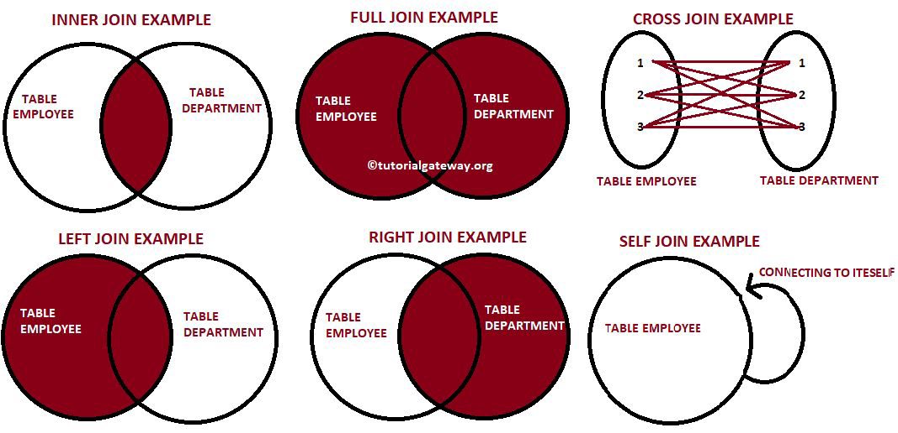

Introduction to SQL#
DDL, DML & DCL#
Data Definition Language (DDL) consists of the commands used to define the database schema by creating, altering or deleting objects
Data Manipulation Language (DML) consists of the commands used to manipulate the data present in the database such as selecting, inserting, updating or deleting records in a database
Data Control Language (DCL) deals with the rights, permissions and other controls of the database system
What can SQL do?#
SQL can execute queries against a database
SQL can retrieve data from a database
SQL can insert records in a database
SQL can update records in a database
SQL can delete records from a database
SQL can create new databases
SQL can create new tables in a database
SQL can create stored procedures in a database
SQL can create views in a database
SQL can set permissions on tables, procedures, and views
What can SQL do?#
Data Definition Language (DDL)
create new databases
create new tables in a database
create stored procedures in a database
create views in a database
Data Manipulation Language (DML)
execute queries against a database
retrieve data from a database
insert records in a database
update records in a database
delete records from a database
Data Control Language (DCL)#
set permissions on tables, procedures, and views
Syntax#
SQL is structured similar to the English language
SELECT range
FROM age_bucket;
Each table is identified by name
SQL keywords are NOT case sensitive: select = SELECT
SQL Syntax Overview#
KEYWORD |
FUNCTION |
|---|---|
SELECT |
Returns the final data |
FROM |
Choose tables to get base data |
WHERE |
Filters the base data |
GROUP BY |
Aggregates the base data |
HAVING |
Filters the aggregated data |
ORDER BY |
Sorts the final data |
LIMIT |
Limits the returned data to a row count |
Selecting Data#
SELECT FROM#
Select multiple columns
SELECT column1, column2, ...
FROM table_name;
Select all columns
SELECT *
FROM table_name;
Your first SQL query#
Look in the introduction schema
In the new window on the right click on the query under ‘Your first
SQL query’:
SELECT range
FROM age_bucket;
Now press ^ CTRL ⮐ RETURN and check out the output that was
generated below.
Congratulations you just ran your first SQL query!
SELECT DISTINCT#
SELECT DISTINCT column_names(s)
FROM table_name;
Columns often contain duplicate values
DISTINCT returns only distinct (=different) values
LIMIT#
SELECT column_names(s)
FROM table_name
LIMIT number;
Databases often contain tables with huge amounts of
columns and rowsBy default SQL tries to retrieve all the rows it can find in a table
The bigger the table, the longer it takes to retrieve its data,
therefore always LIMIT your data to only a few rows
Filtering Data#
WHERE#
SELECT column_name(s)
FROM table_name
WHERE condition;
The where clause is used to filter records
‘condition’ represents how we want the data to be filtered
Use quotation marks when filtering string values
eg. name =’female’ for gender tableExample: Retrieve all days with more than 100 cases
WHERE Operators#
Operator |
Description |
|---|---|
= |
Equal |
> |
Greater than |
< |
Less than |
>= |
Greater than or equal |
<= |
Less than or equal |
<> or != |
Not equal |
BETWEEN |
Between a certain range |
LIKE |
Search for a pattern |
IN |
To specify multiple possible values for a column |
WHERE with AND, OR, NOT#
SELECT column_name(s)
FROM table_name
1. WHERE condition1 AND condition2 AND condition3 ...;
2. WHERE condition1 OR condition2 OR condition3 ...;
3. WHERE NOT condition1;
AND displays data if all the conditions separated by AND are TRUE
OR displays data if any of the conditions separated by OR are TRUE
NOT displays data if the condition(s) is NOT TRUE
WHERE with NULL values#
SELECT column_name(s)
FROM table_name
WHERE column_name IS NULL | IS NOT NULL
A field that contains a NULL value is a field with no value
-> it was left blank during record creationTherefore, it’s different from a zero value or a value that contains spaces
It is not possible to check for NULL values using the WHERE
operators (=, <>, >, <) → Always use IS NULL to filter for
NULL values
Sorting Data#
ORDER BY#
SELECT column_name(s)
FROM table_name
WHERE condition
ORDER BY column1 ASC | DESC, column2 ASC | DESC, ...;
ORDER BY sorts the results either in ascending or descending order
By default, results are sorted in ascending order
When sorting by multiple columns, you can set the sorting
order for each column separatelyColumns in the ORDER BY can not only be referenced name but also
by their index in the SELECT statement
Aliasing#
Aliases for columns and tables#
SELECT column1 AS alias_name, ...
FROM table_name;
SELECT column_name(s)
FROM table_name AS alias_name;
An alias is created with the AS keyword
It allows you to give a column or a table a new temporary name within the query
Use snake case = writing spaces as underscores when creating aliases
(arrivaltime -> arrival_time)
Column names are long or not very readable
Aggregate functions are used
More than one table is involved
Multiple columns are combined
Selecting from multiple tables#
Joining tables#

JOIN#
SELECT t1.name, t2.something
FROM table1 t1
INNER JOIN table2 t2
ON t1.key1 = t2.key2;
inner join is default
now with nice names:
get all cases for women
get all cases for men between 20 and 50
Aggregating Data#
MIN() and MAX()#
SELECT MIN(column1),
MAX(column2), ...
FROM table_name;
The MIN() function returns the smallest value of the selected column
The MAX() function returns the largest value of the selected column
AVG(), COUNT() and SUM()#
SELECT AVG(column1),
COUNT(column2),
SUM(column3), ...
FROM table_name;
The AVG() function returns the average value of a numeric column
The COUNT() function returns the number of non NULL values
The SUM() function returns the total sum of a numeric column
DISTINCT can be used inside AVG(), COUNT() and SUM()
Arithmetic Operators#
SELECT <expression1><operator><expression2> ...
FROM table_name;
Arithmetic operators can perform addition, subtraction, multiplication and division on numeric values
Performing arithmetic calculations is not limited to column names but can be done on single constants, variables or results from other SQL queries
| Operator | Meaning |
|---|---|
| + | Addition |
| - | Subtraction |
| * | Multiplication |
| / | Division |
| % | Modulo |
GROUP BY#
SELECT column_name(s)
FROM table_name
WHERE condition
GROUP BY column_name(s)
ORDER BY column1, column2;
GROUP BY lets you arrange identical data across rows into groups
In combination with aggregate functions (MIN(), MAX(), AVG(), COUNT(), SUM()) it’s used to create summary reports across columns
HAVING#
SELECT column_name(s)
FROM table_name
WHERE condition
GROUP BY column_name(s)
HAVING condition,
ORDER BY column1, column2;
Aggregate functions can’t be used to filter data inside the WHERE clause, instead use HAVING
Example: HAVING COUNT(column1) > 5
Documenting Code#
SQL Comments#
There are two ways of commenting your SQL code
-- single line comment
/* Mulit line
coments
*/
Single line comments starting with –
Multi-line comments starting with /* and ending with */
Why use comments?
Reviewing or taking over long and complicated SQL statements is much easier when having proper documentation
Testing or debugging your code often requires step-by-step execution, where being able to prevent execution of certain SQL statements proves very useful